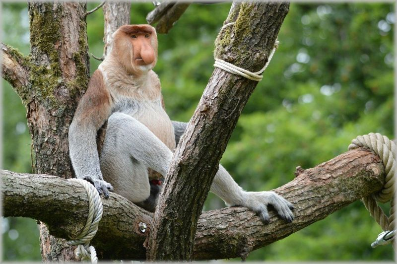

Macaco-Narigudo

O macaco-narigudo (Nasalis larvatus) é um macaco da família dos cercopitecídeos, endêmico das florestas tropicais de Bornéu, o qual se encontra localizado no oceano Índico.
É fácil reconhecer essa espécie devido ao enorme nariz dos machos, o qual fica ainda maior, e avermelhado, quando excitado ou nervoso.
Bem grande, o Macaco-Narigudo mede entre 60 e 76 cm e pesa entre 7 e 22 kg. Os machos são bem maiores e mais pesados do que a fêmea, a qual também não possui o nariz protuberante deles (o dela é bem menor). Por falar nele, o gigantesco nariz serve para ressoar o som emitido pelos machos, principalmente durante os períodos de acasalamento, otimizando a vocalização. O engraçado é que, de tão grande o nariz, o macho precisa, às vezes, pegá-lo com a mão e tirá-lo da frente da boca para comer em paz.
Possui hábitos diurnos e é, possivelmente, o primata mais familiarizado com o meio aquático, possuindo verdadeiras habilidades de natação. Chegam a nadar até 20 metros submersos em água. Alimenta-se, sobretudo, de folhas e frutos, ingerindo alguns insetos casualmente. Devido ao hábito de comer muitas folhas, uma outra característica surge nesse animal: suas grande 'pança'. Sim, sua barriga é bem grande para comportar um estômago maior e mais complexo, lar de diversas bactérias que irão ajudá-lo a quebrar a celulose das folhas, em algo um pouco parecido com os ruminantes. A expectativa de vida desses animais pode alcançar os 23 anos.
Devido ao hábito de comer muitas folhas, uma outra característica surge nesse animal: suas grande 'pança'. Sim, sua barriga é bem grande para comportar um estômago maior e mais complexo, lar de diversas bactérias que irão ajudá-lo a quebrar a celulose das folhas, em algo um pouco parecido com os ruminantes. A expectativa de vida desses animais pode alcançar os 23 anos.